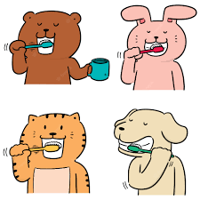

February is Pet Dental Health Month
Feb 13, 2021 | BLOG
If we have fuzzy teeth or some food stuck in between teeth, we have the luxury of a toothbrush and floss.
But, what if we were physically unable brush our own teeth or to floss? What if we were entirely dependent
on our caretakers for daily dental hygiene?
Imagine what it is like to be a dog or cat, they cannot let us know if their mouths feel unclean.
The month of February is a perfect reason to start healthier dental hygiene habits for your pet.
Here are a few suggestions for you:
It is annual dental cleaning discount month! Most veterinarians offer a discount for dental cleaning, so
take them up on that discount. The procedure involves the use of an ultrasonic scaler, which is like a super
high-speed vibrating tool to clean the teeth. This removes plaque and tartar buildup. In most cases, they
are able to use the tool in a manner to get some of the bacteria slightly below the gum line, too.
Clean your pet’s water dish with soap and water at least 3 times a week. You don’t drink out of
dirty glasses, neither should your pets. Dust, food debris and saliva all have microbes that swim the
backstroke in your pet’s water dish. Washing a pet’s water dish with soap and water gets rid of biofilm that
makes your dog’s mouth even dirtier.
Switch to a rotational diet. Just like your grandmother always told you, ‘variety is the spice of
life’ and ‘everything in moderation’. Dogs with a narrow diet start to have allergies and have a less
diverse oral and gut microbiome. Diversity in the microbiome strongly correlates with health and less
inflammation.
Dental treats, foods and even a raw diet have carbohydrates (sugars), which oral bacteria quickly
convert to organic acids and causes gum disease. These sugars fuel disease-causing bacteria that live below
the gum line and disrupt the ligaments that holds your pet’s teeth in place. Our goal is to develop safe and
effective dental care products that counter the effects of carbohydrates in our dogs’ diets.
We all want to provide the best life for our pets. Let February be a reminder that dental health is
an essential part of ensuring that’s exactly what they get.
Cheers to dental health in 2021!
Dr. Emily Stein is an expert microbiologist and immunologist who’s invented a pipeline of dental
formulations that balance the oral microbiome to promote dental health. After watching her 10 year-old
rescue dog come close to death because of blood infection caused by dental disease, she invented
Protektin42TM, a prebiotic powder that can be added to drinking water that targets the root cause of dental
disease.
Dog Foundation is proud to partner with TEEF to promote better dental health in
dogs.
Learn more at www.teefhealth.com


Comments